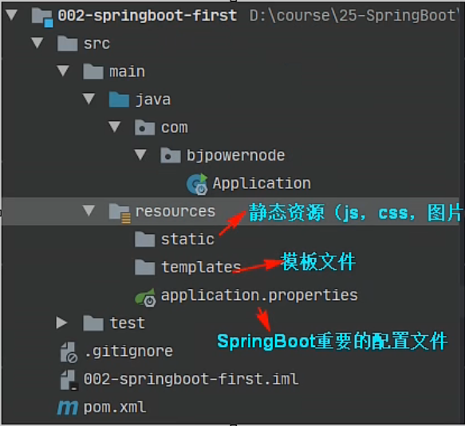
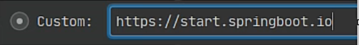

SpringBoot
一、JavaConfig
- 为什么要使用 Spring Boot
因为Spring， SpringMVC 需要使用的大量的配置文件 （xml文件）
还需要配置各种对象，把使用的对象放入到spring容器中才能使用对象
需要了解其他框架配置规则。
- SpringBoot 就相当于 不需要配置文件的Spring+SpringMVC。 常用的框架和第三方库都已经配置好了。
拿来就可以使用了。
- SpringBoot开发效率高，使用方便多了
1.1 JavaConfig
JavaConfig：使用java类作为xml配置文件的替代，是配置spring容器的纯java的方式。在这个java类中可以创建java对象，把对象放入spring容器中（注入到容器）。
使用两个注解：
1)@Configuration:放在一个类的上面，表示这个类是作为配置文件使用的
2)@Bean:声明对象，把对象注入到容器中
例子：
import com.bjpowernode.vo.Student;
import org.springframework.context.annotation.Bean;
import org.springframework.context.annotation.Configuration;
/**
* Configuration:表示当前类是作为配置文件使用的。就是用来配置容器的
* 位置：在类的上方
* SpringConfig这个类相当于beans.xml
*/
@Configuration
public class SpringConfig {
/**
* 创建方法，方法的返回值是对象，在方法的上面加入@bean
* 方法的返回值对象就注入到容器中
*
* @Bean:把对象注入到spring容器中。作用相当于<bean>
* 位置：方法的上面
* 说明：@Bean，不指定对象的名称，默认方法名是id
*/
@Bean
public Student createStudent() {
return new Student("张三", 20, "男");
}
/**
* 指定对象在容器中的名称（指定<bean>的id属性）
* @Bean的name属性，指定对象的名称(id)
*/
@Bean(name = "lisi")
public Student makeStudent(){
return new Student("李四",22,"男");
}
}
1.2 @ImportResource
@ImportResource用于导入其他xml配置文件，等于在xml中的
<import resource="其他配置文件"/>
例如：
@Configuration
@ImportResource(value = {"classpath:applicationContext.xml","classpath:beans.xml"})
public class SpringConfig {}
1.3 @PropertyResource
@PropertyResource:读取properties属性配置文件。使用属性配置文件可以实现外部化配置，在程序代码之外提供数据
步骤：
1.在resource目录下，创建properties文件，使用key=value的格式提供数据
2.在PropertyResource指定properties文件的位置
3.使用@Value(value="${key}")
@Configuration
@ImportResource(value = {"classpath:applicationContext.xml","classpath:beans.xml"})
@PropertySource(value = "classpath:config.properties")
@ComponentScan(basePackages = "com.bjpowernode.vo")
public class SpringConfig {}
二、SpringBoot入门
2.1 介绍
SpringBoot是Spring中的一个成员， 可以简化Spring，SpringMVC的使用。 他的核心还是IOC容器。
特点：
- Create stand-alone Spring applications
创建spring应用
- Embed Tomcat, Jetty or Undertow directly (no need to deploy WAR files)
内嵌的tomcat， jetty ， Undertow
- Provide opinionated 'starter' dependencies to simplify your build configuration
提供了starter起步依赖，简化应用的配置。
比如使用MyBatis框架 ， 需要在Spring项目中，配置MyBatis的对象 SqlSessionFactory ， Dao的代理对象
在SpringBoot项目中，在pom.xml里面, 加入一个 mybatis-spring-boot-starter依赖
- Automatically configure Spring and 3rd party libraries whenever possible
尽可能去配置spring和第三方库。叫做自动配置（就是把spring中的，第三方库中的对象都创建好，放到容器中， 开发人员可以直接使用）
- Provide production-ready features such as metrics, health checks, and externalized configuration
提供了健康检查， 统计，外部化配置
- Absolutely no code generation and no requirement for XML configuration
不用生成代码， 不用使用xml，做配置
2.2 创建Spring Boot项目
2.2.1 第一种方式， 使用Spring提供的初始化器， 就是向导创建SpringBoot应用
使用的地址： https://start.spring.io
SpringBoot项目的结构：

2.2.2 使用国内的地址
https://start.springboot.io

2.3 注解的使用
@SpringBootApplication
符合注解：由
@SpringBootConfiguration
@EnableAutoConfiguration
@ComponentScan
1.@SpringBootConfiguration
@Configuration
public @interface SpringBootConfiguration {
@AliasFor(
annotation = Configuration.class
)
boolean proxyBeanMethods() default true;
}
说明：用了@SpringBootConfiguration注解标注的类，可以作为配置文件使用，可以使用Bean声明对象，注入容器中
2.@EnableAutoConfiguration
启用自动配置，把java对象配置好，注入到spring容器中。例如可以把mybatis的对象创建好，放入到容器中
3.@ComponentScan
扫描器，找到注解，根据注解的功能创建对象，给属性赋值等
默认扫描的包：@ComponentScan所在的类的包和所在类的包的子包
2.4 SpringBoot的配置文件
- 配置文件名称：application
-
扩展名有：properties(k=v); yml(k: v)
-
使用application.propeties、application.yml
-
例1：application.properties 设置端口和上下文路径
properties
#设置端口
server.port=8082
#设置访问应用的上下文路径，context-path
server.servlet.context-path=/myBoot
- 例2：application.yml 设置端口和上下文路径
yml
server:
port: 8083
servlet:
context-path: /myboot2
2.5 多环境配置
- 开发环境、测试环境、上线的环境
-
每个环境有不同的配置信息，例如端口、上下文剪、数据库url、用户名、密码等
-
使用多环境配置文件，可以方便的切换不同的配置
-
使用方式：创建多个配置文件，名称规则：application-环境名称.properties(yml)
-
创建开发环境的配置文件：application-dev.properties(application-dev.yml)
- 创建测试中使用的配置：application-test.properties
2.6 使用jsp
springboot不推荐使用jsp，而是是用模板技术代替jsp
使用jsp需要配置：
- 加入一个处理jsp的依赖，负责编译jsp文件
xml
<dependency>
<groupId>org.apache.tomact.embed</groupId>
<artifactId>tomcat-embed-jasper</artifactId>
</dependency>
-
如果需要使用servlet、jsp、jstl的功能则需要添加响应的依赖
-
创建一个存放jsp的目录，一般交webapp
index.jsp
- 需要在pom.xml指定jsp文件编译后的存放目录
META-INF/resources
-
创建Controller，访问jsp
-
在application.properties文件中配置视图解析器
2.7 使用容器
-
通过代码从容器中获取对象
-
通过SpringApplication.run(Application.class, args);返回值获取容器
```java public static ConfigurableApplicationContext run(Class<?> primarySource, String... args) { return run(new Class[]{primarySource}, args); }
ConfigurableApplicationContext：接口，是applicationContext的子接口 public interface ConfigurableApplicationContext extends ApplicationContext {} ```
2.8 CommandLineRunner接口，ApplicationRunner接口
这两个接口都有一个run()方法，执行时间在容器对象创建好后，自动执行run()方法
可以完成自定义的在容器对象创建好的一些操作
@FunctionalInterface
public interface CommandLineRunner {
void run(String... args) throws Exception;
}
@FunctionalInterface
public interface ApplicationRunner {
void run(ApplicationArguments args) throws Exception;
}
@SpringBootApplication
public class Springboot010CommendlinerunnerApplication implements CommandLineRunner {
@Resource
private HelloService helloService;
public static void main(String[] args) {
System.out.println("容器对象创建之前");
SpringApplication.run(Springboot010CommendlinerunnerApplication.class, args);
System.out.println("容器对象创建之后");
}
@Override
public void run(String... args) throws Exception {
helloService.sayHello("zhangsan");
//可以做自定义操作，比如读取文件、数据库等
System.out.println("在容器对象创建好、执行的方法");
}
}
三、WEB组件
3.1 拦截器
拦截器是springmvc中的一种对象，能拦截对Controller的请求
拦截器框架中有系统的拦截器，还可以自定义拦截器，实现对请求的预先处理
实现自定义拦截器：
- 创建类实现springmvc框架中的HandlerInterceptor接口
```java public interface HandlerInterceptor { default boolean preHandle(HttpServletRequest request, HttpServletResponse response, Object handler) throws Exception { return true; }
default void postHandle(HttpServletRequest request, HttpServletResponse response, Object handler, @Nullable ModelAndView modelAndView) throws Exception {
}
default void afterCompletion(HttpServletRequest request, HttpServletResponse response, Object handler, @Nullable Exception ex) throws Exception {
}
} ```
- 需在springmvc的配置文件中，声明拦截器
xml
<mvc:interceptors>
<mvc:interceptor>
<mvc:path="url"/>
<bean class="拦截器类全限定名称"/>
</mvc:interceptor>
</mvc:interceptors>
SpringBoot中注册拦截器
@Configuration
public class MyAppConfig implements WebMvcConfigurer {
//添加拦截器对象，注入到容器中
@Override
public void addInterceptors(InterceptorRegistry registry) {
//创建拦截器对象
HandlerInterceptor handler = new LoginInterceptor();
//指定拦截的uri地址
String[] path = {"/user/**"};
//指定不拦截的地址
String[] excludePath = {"/user/login"};
registry.addInterceptor(handler).addPathPatterns(path).excludePathPatterns(excludePath);
}
}
3.2 Servlet
在SpringBoot框架中使用Servlet对象
使用步骤：
- 创建Servlet类，创建类继承HttpServlet
- 注册Servlet，让框架能找到Servlet
例子：
- 创建自定义Servlet
```java //创建servlet类 public class MyServlet extends HttpServlet { @Override protected void doGet(HttpServletRequest req, HttpServletResponse resp) throws ServletException, IOException { doPost(req, resp); }
@Override
protected void doPost(HttpServletRequest request, HttpServletResponse response) throws ServletException, IOException {
//使用HttpServletResponse输出数据，应答结果
response.setContentType("text/html;charset=utf-8");
PrintWriter out = response.getWriter();
out.println("执行的是Servlet");
out.flush();
out.close();
}
}
```
- 注册Servlet
```java @Configuration public class WebApplicationConfig {
//定义方法，注册Servlet对象
@Bean
public ServletRegistrationBean servletRegistrationBean(){
//public ServletRegistrationBean(T servlet, String... urlMappings)
//第一个参数是Servlet对象，第二个是url地址
//ServletRegistrationBean<Servlet> bean = new ServletRegistrationBean<>(new MyServlet(), "/myservlet");
ServletRegistrationBean<Servlet> bean = new ServletRegistrationBean<>();
bean.setServlet(new MyServlet());
bean.addUrlMappings("/login","/test"); //<url-pattern>
return bean;
}
} ```
3.3 过滤器Filter
Filter是Servlet规范中的过滤器，可以处理请求，对请求参数，属性进行调整。常在过滤器中处理字符编码
在框架中使用过滤器：
- 创建自定义过滤器类
java
public class MyFilter implements Filter {
@Override
public void doFilter(ServletRequest servletRequest, ServletResponse servletResponse, FilterChain filterChain) throws IOException, ServletException {
System.out.println("执行了MyFilter的doFilter");
filterChain.doFilter(servletRequest, servletResponse);
}
}
- 注册Filter过滤器对象
```java @Configuration public class WebApplicationConfig { @Bean public FilterRegistrationBean filterRegistrationBean(){
FilterRegistrationBean<Filter> bean = new FilterRegistrationBean<>();
bean.setFilter(new MyFilter());
bean.addUrlPatterns("/user/*");
return bean;
}
} ```
3.4 字符集过滤器
CharacterEncodingFilter：解决post请求中乱码的问题
在SpringMVC框架，在web.xml中注册过滤器，配置它的属性
第一种方式
使用步骤：
- 配置字符集过滤器
```java
@Configuration
public class Config {
//注册servlet
@Bean
public ServletRegistrationBean servletRegistrationBean(){
ServletRegistrationBean
//注册Filter
@Bean
public FilterRegistrationBean filterRegistrationBean(){
FilterRegistrationBean<Filter> bean = new FilterRegistrationBean<>();
//使用框架中的过滤器类
CharacterEncodingFilter filter = new CharacterEncodingFilter();
//指定使用的编码方式
filter.setEncoding("utf-8");
//指定request，response都是要encoding的值
filter.setForceEncoding(true);
/*
public void setForceEncoding(boolean forceEncoding) {
this.forceRequestEncoding = forceEncoding;
this.forceResponseEncoding = forceEncoding;
}
*/
bean.setFilter(filter);
//指定过滤的url地址
bean.addUrlPatterns("/*");
return bean;
}
} ```
- 修改application.properties文件，让自定义的过滤器起作用
properties
#SpringBoot中默认已经配置了CharacterEncodingFilter。默认编码ISO-8859-1
#设置enabled-false 作用是关闭系统中配置好的过滤器，使用自定义的CharacterEncodingFilter
server.servlet.encoding.enabled=false
第二种方式
修改application.properties文件
#让系统的CharacterEncodingFilter生效
#server.servlet.encoding.enabled=true
#指定使用编码的方式
server.servlet.encoding.charset=utf-8
#强制request、response都是要charset的值
server.servlet.encoding.force=true
四、ORM操作MySQL
使用mybatis框架操作数据，在SpringBoot框架中集成mybatis
使用步骤：
-
mybatis起步依赖：完成mybatis对象自动配置，对象放在容器中
-
pom.xml指定把src/main/java目录中的xml文件包含到classpath中
-
创建实体类Student
-
创建Dao接口 StudentDao，创建查询方法
-
创建Dao接口对应的Mapper文件，xml文件，写sql语句
-
创建Service层对象，创建StudentService接口和实现类，去实现Dao对象的方法，完成数据库的操作
-
创建Controller对象，访问Service
-
写application.properties文件
配置数据库的连接信息
第一种方式：@Mapper
@Mapper：放在dao接口的上面，每个接口都需要使用这个注解
java
/**
* @Mapper：告诉mybatis这是dao接口，创建此接口的代理对象
* 位置：在类的上面
*/
@Mapper
public interface StudentDao {
Student selectById(@PathParam("stuId")Integer id);
}
第二种方式：@MapperScan
/**
* @MapperScan：找到Dao接口和Mapper 文件
* basePackages：Dao接口所在的包名
*/
@SpringBootApplication
@MapperScan(basePackages = "com.bjpowernode.dao")
public class Application {
public static void main(String[] args) {
SpringApplication.run(Application.class, args);
}
}
第三种方式：Mapper文件和Dao接口分开管理
把Mapper文件放在resources目录下
- 在resources目录中创建子目录(自定义)，例如：mapper
- 把mapper文件放到 mapper目录中
- 在application.properties文件中，指定mapper文件的目录
#指定mapper文件的位置
mybatis.mapper-locations=classpath:mapper/*.xml
#指定mybatis的日志
mybatis.configuration.log-impl=org.apache.ibatis.logging.stdout.StdOutImpl
第四个：事务
Spring框架中的事务：
- 管理事务的对象：事务管理器(接口，接口有很多实现类)
例如：使用jdbc或mybatis访问数据库，使用事务管理器：DataSourceTransactionManager
- 声明式事务：在xml配置文件或使用注解说明事务控制的内容
控制事务：隔离级别、传播行为、超时时间
-
事务处理方式：
-
Spring框架中的@Transactional
- aspectj框架可以在xml配置文件中，声明事务控制的内容
SpringBoot中使用事务：以上两种方式都可使用
- 在业务方法的上面加入@Transactional，加入注解后，方法就有事务功能了
- 明确的在主启动类的上面加入@EnableTransactionManagement
例如：
/**
* @Transactional：表示方法有事务支持
* 默认：使用数据库的隔离界别，REQUIRED传播行为；超时时间 -1
* 抛出运行时异常，目的是回滚事务
*/
@Transactional
@Override
public int insertStudent(Student student) {
System.out.println("业务方法insertStudent");
int count = studentMapper.insert(student);
System.out.println("执行sql语句");
//抛出运行时异常，目的是回滚事务
//int i = 10 / 0;
return count;
}
五、接口架构风格-RESTful
接口：API
应用程序接口（英语：Application Programming Interface，简称：API），又称为应用编程接口，就是软件系统不同组成部分衔接的约定。由于近年来软件的规模日益庞大，常常需要把复杂的系统划分成小的组成部分，编程接口的设计十分重要。程序设计的实践中，编程接口的设计首先要使软件系统的职责得到合理划分。良好的接口设计可以降低系统各部分的相互依赖，提高组成单元的内聚性，降低组成单元间的耦合程度，从而提高系统的维护性和扩展性。
接口(API0)：可以指访问servlet、controller的url、调用其他程序的函数
架构风格：API组织方式(样子)
就是一个传统的URL：http://localhost:8080/mytransaction/insertStudent?name=zhangsan&age=20
在地址上提供了访问的资源名称insertStudent，在其后使用了get方式传递参数
5.1 REST
RESTful架构风格
- REST : （英文： Representational State Transfer , 中文： 表现层状态转移)。
REST：是一种接口的架构风格和设计的理念，不是标准
优点：更简洁，更有层次
表现层状态转移：
-
表现层：视图层，显示资源的，通过视图页面，jsp等等显示操作资源的结果
-
状态：资源变化
-
转移：资源可以变化的。资源能创建，new状态。资源创建后可以查询资源，能看到资源的内容
这个资源的内容可以被修改，修改后资源和之前的不一样
-
REST中的要素：
用REST表示资源和对资源的操作。在互联网中，表示一个资源或者一个操作
资源使用URL表示的，在互联网中，使用的图片、视频、文本、万叶等等都是资源
资源是用名词表示
对资源：
- 查询资源：看，通过url找到资源
- 创建资源：添加资源
- 更新资源：更新资源。编辑
- 删除资源：去除
资源使用url表示，通过名词表示资源
在url中，使用名词表示资源，以及访问资源的信息，在url中使用“/”分割对资源的信息
http://locathost:8080/myboot/student/1001
使用http中的动作(请求方式)，表示对资源的操作(CURD)
GET：查询资源 -- sql select
处理单个资源：用它单数的方式
http://locathost:8080/myboot/student/1001
http://locathost:8080/myboot/student/1001/1
处理多个资源：使用复数形式
http://locathost:8080/myboot/student/1001/1002
POST：创建资源 -- sql insert
http://locathost:8080/myboot/student/1002
在post请求中传递数据
```html
```
PUT：更新资源 -- sql update
```html
```
DELETE：删除资源 -- sql delete
html
<a href="http://locathost:8080/myboot/student/1">删除1的数据</a>
需要的分页，排序等参数，依然放在url后面
http://locathost:8080/myboot/student?page=1&pageSize=20
- 一句话说明REST：
使用url表示资源，使用http动作操作资源
- 注解
@PathVariable：从url中获取数据
@GetMapping：支持get请求方式，等同于@RequestMapping(method = RequestMethod.Get)
@PostMapping：支持post请求方式，等同于@RequestMapping(method = RequestMethod.Post)
@PutMapping：支持put请求方式，等同于@RequestMapping(method = RequestMethod.Put)
@DeleteMapping：支持delete请求方式，等同于@RequestMapping(method = RequestMethod.Delete)
@RestController：符合注解，是@Controller和@ResponseBody组合
在类的上面使用@RestController，表示当前类中的所有方法都加入了@ResponseBody
- Postman：测试工具
使用Postman：可以测试各种请求方式
5.2 在页面中或ajax中，支持put、delete请求
在SpringMVC中有个过滤器，支持post请求转为put、delete请求
过滤器：org.springframework.web.filter.HiddenHttpMethodFilter
作用：把请求中的post请求转为put、delete
实现步骤：
- application.properties中开启启用HiddenHttpMethodFilter过滤器
- 在请求页面中，包含_method参数，它的值是put、delete，发起这个请求使用的是post方式
六、Redis
Redis：一个NoSQL数据库，常用作缓存使用(cache)
Redis的数据类型：string、hash、set、zset、list
Redis是一个中间件：是一个独立的服务器
java中著名的客户端：Jedis、lettuce、Redisson
Spring、SpringBoot中有个RedisTemplate(StringRedisTemplate)，处理和Redis交互
RedisTemplate使用lettuce客户端库
<dependency>
<groupId>org.springframework.boot</groupId>
<artifactId>spring-boot-starter-data-redis</artifactId>
</dependency>
data-redis使用的 lettuce 客户端
在程序中使用RedisTemplate类的方法 操作redis数据，实际就是调用lettuce客户端中的方法
6.1 RedisTemplate 和 StringRedisTemplate
-
StringRedisTemplate：把k，v都作为String处理，使用的是String的序列化，可读性好
-
RedisTemplate ：把k，v经过了序列化存到redis。k，v是序列化的内容，不能直接识别
默认使用JDK的序列化，可以修改为其他的序列化
序列化：把对象转化为可传输的字节序列过程称为序列化
反序列化：把字节序列还原为对象的过程称为反序列化
为什么需要序列化：
- 序列化的最终目的是为了对象可以跨平台存储，和进行网络传输。而我们进行跨平台存储和网络传输的方式就是IO，而我们的IO支持的数据格式就是字节数组。我们必须在吧对象转成字节数组的时候就指定一种规则(序列化)，那么我们从IO流里面读出数据的的时候再以这种规则把对象还原回来(反序列化)
序列化的方式：
- 序列化只是一种拆装组装对象的规则，那么这种规则肯定也可能有多种多样，比如现在创建的序列化的方式有：
JDK（不支持跨语言）、JSON、XML、Hessian、Kryo（不支持跨语言）、Thrift等
设置key，value的序列化方式（在存取值之前设置）
//使用RedisTemplate
//设置key使用String的序列化
//设置value使用String的序列化
redisTemplate.setKeySerializer(new StringRedisSerializer());
redisTemplate.setValueSerializer(new StringRedisSerializer());
redisTemplate.opsForValue().set(k, v);
//设置value使用json序列化
redisTemplate.setValueSerializer(new Jackson2JsonRedisSerializer<>(Student.class));
七、SpringBoot集成Dubbo
7.1 公共项目
独立的maven项目：定义了接口和数据类
public class Student implements Serializable {
private static final long serialVersionUID = 1901229007746699151L;
private Integer id;
private String name;
private Integer age;
}
public interface StudentService {
Student queryStudentById(Integer id);
}
7.2 提供者
创建SpringBoot项目：
- 提供pom依赖
```xml
<!--dubbo依赖-->
<dependency>
<groupId>org.apache.dubbo</groupId>
<artifactId>dubbo-spring-boot-starter</artifactId>
<version>3.0.7</version>
</dependency>
<!--zookeeper依赖-->
<dependency>
<groupId>org.apache.dubbo</groupId>
<artifactId>dubbo-dependencies-zookeeper</artifactId>
<version>3.0.7</version>
<type>pom</type>
<!--排除log4j依赖-->
<exclusions>
<exclusion>
<groupId>org.slf4j</groupId>
<artifactId>slf4j-log4j12</artifactId>
</exclusion>
</exclusions>
</dependency>
```
- 实现接口
java
/**
* 使用dubbo注解暴露服务，@Component可以不用加
* @Component是为了将类创建的对象注入到容器中，@DubboService已经可以将对象注入到容器中，所以不用加
*/
@DubboService(version = "1.0.0", timeout = 5000)
public class StudentServiceImpl implements StudentService {
@Override
public Student queryStudentById(Integer id) {
Student student = new Student();
if (1001 == id){
student.setId(1001);
student.setName("==张三");
student.setAge(20);
} else if (1002 == id) {
student.setId(1002);
student.setName("==李四");
student.setAge(22);
}
return student;
}
}
- 修改application.properties
```properties #配置服务名称 dubbo:application name="名称" spring.application.name=studentservice-provider
#配置扫描的包，扫描的@DubboService dubbo.scan.base-packages=com.bjpowernode.service
#配置dubbo协议 #dubbo.protocol.name=dubbo #dubbo.protocol.port=2081
#注册中心 dubbo.registry.address=zookeeper://192.168.233.130:2181 dubbo.config-center.timeout=15000 ```
- 在启动类上加@EnableDubbo
```java @SpringBootApplication @EnableDubbo public class ServiceProviderApplication { public static void main(String[] args) { SpringApplication.run(ServiceProviderApplication.class, args); }
} ```
7.3 消费者
创建SpringBoot项目：
- pom.xml
```xml
<!--dubbo依赖-->
<dependency>
<groupId>org.apache.dubbo</groupId>
<artifactId>dubbo-spring-boot-starter</artifactId>
<version>3.0.7</version>
</dependency>
<!--zookeeper依赖-->
<dependency>
<groupId>org.apache.dubbo</groupId>
<artifactId>dubbo-dependencies-zookeeper</artifactId>
<version>3.0.7</version>
<type>pom</type>
<!--排除log4j依赖-->
<exclusions>
<exclusion>
<groupId>org.slf4j</groupId>
<artifactId>slf4j-log4j12</artifactId>
</exclusion>
</exclusions>
</dependency>
```
- 创建Controller或者Service都可以
```java @RestController //此类中所有的方法都加上了@ResponseBody public class MyController {
/**
* 引用远程服务，把创建好的代理队形，注入给studentService
*/
//@DubboReference(interfaceClass = StudentService.class, version = "1.0.0")
/**
* 没有使用interfaceClass，默认使用的就是 引用类型的 数据类型
*/
@DubboReference(version = "1.0.0")
private StudentService studentService;
@GetMapping("/query")
public String queryStudentById(Integer id) {
Student student = studentService.queryStudentById(id);
return "调用远程接口获取对象：" + student;
}
} ```
- 修改application.properties
properties
#指定服务名称
spring.application.name=consumer-application
#指定注册中心
dubbo.registry.address=zookeeper://192.168.233.130:2181
八、打包
8.1 打包为war
-
创建包含jsp的项目
-
修改pom.xml
-
指定打包后的文件名称
xml <build> <finalName>myboot</finalName> </build> -
指定jsp编译目录
xml <resources> <resource> <directory>src/main/java</directory> <includes> <include>**/*.properties</include> <include>**/*.xml</include> </includes> <filtering>false</filtering> </resource> <resource> <directory>src/main/resources</directory> <includes> <include>**/*.properties</include> <include>**/*.xml</include> </includes> <filtering>false</filtering> </resource> <resource> <directory>src/main/webapp</directory> <targetPath>META-INF/resources</targetPath> <includes> <include>**/*.*</include> </includes> </resource> </resources> -
执行打包是war
xml
<packaging>war</packaging>
- 主启动类继承SpringBootServletInitializer
```java /* * SpringBootServletInitializer：继承这个类才能够使用独立的Tomcat服务器 / @SpringBootApplication public class WarApplication extends SpringBootServletInitializer {
public static void main(String[] args) {
SpringApplication.run(WarApplication.class, args);
}
@Override
protected SpringApplicationBuilder configure(SpringApplicationBuilder builder) {
return builder.sources(WarApplication.class);
}
} ```
- 部署war
把war放到Tomcat等服务器的发布目录中。Tomcat为例，myboot.war放到Tomcat/webapps目录下
8.2 打包为jar
-
创建包含jsp的项目
-
修改pom.xml
-
指定打包后的文件名称
xml <build> <finalName>myboot</finalName> </build> -
指定spring-boot-maven-plugin版本
xml <plugins> <plugin> <groupId>org.springframework.boot</groupId> <artifactId>spring-boot-maven-plugin</artifactId> <!--打包为jar，有jsp文件时，必须指定maven-plugin插件的版本--> <version>1.4.2.RELEASE</version> </plugin> </plugins> -
最后执行maven clean package
在target目录中，生成jar文件，例子是myboot.jar
执行独立的springboot项目，在cmd中 java -jar myboot.jar
九、Thymeleaf模板引擎
Thymeleaf：是使用java开发的模板技术，在服务器端运行。把处理后的数据发送给浏览器
模板是作视图层工作的，显示数据的。Thymeleaf是基于HTML语言。Thymeleaf语法是应用在HTML标签中。
SpringBoot框架集成Thymeleaf，使用Thymeleaf代替JSP
9.1 表达式
- 标准变量表达式
语法：${key}
作用：获取key对应的文本数据，key是request作用域中的key，使用request.setAttrebute()或model.addAttrebute()
在页面中的html标签中，使用th:text=“${key}”
```html
标准变量表达式：${key}
获取User对象属性值
id
name
```
- 选择变量表达式（星号变量表达式）
语法：*{key}
作用：获取这个key对应的数据，*{key}要和th:object这个属性一起使用
目的是简单获取对象的属性值
```html
选择变量表达式：*{key}
使用*{key} 获取User的属性值
```
- 连接表达式（URL表达式）
语法：@{url}
作用：表示连接
html
<script src="...">,<link href="...">,<a href="...">,<form action="...">,<img src="...">
9.2 Thymeleaf属性
属性是放在html元素中的，就是html元素的属性，加入了th前缀。属性的作用不变，加上th。属性的值由模板引擎处理了，在属性就可以使用变量表达式
<form action="/loginServlet" method="post"></form>
<form th:action="/loginServlet" th:method="${methodAttr}"></form>
9.3 each
each循环吗，可以循环List，Array，Map
语法：
在一个html标签中，使用th:each
<div th:each="集合循环成员，循环的状态变量:${key}">
<p th:text="${集合循环成员}"></p>
</div>
集合循环成员，循环的状态变量：两个名称都是自定义的。“循环的状态变量”这个名称可以不定义，默认是“集合循环成员Stat”
each循环变量Map
在一个html标签中，使用th:each
<div th:each="集合循环成员，循环的状态变量:${key}">
<p th:text="${集合循环成员.key}"></p>
<p th:text="${集合循环成员.value}"></p>
</div>
key:map集合中的key
value:map集合中key对应的value值
9.4 th:if
“th:if”：判断语句，当条件为true，显示html标签体内容，反之不显示，没有else语句
语法：
<div th:if="10 > 0">显示文本内容</div>
还有一个th:unless 和 th;if 相反的行为
语法：
<div th:unless="10 < 0">当条件为false显示文本内容</div>
9.5 th:switch
th:switch和java中的switch
语法：
<div th:switch="要比对的值">
<p th:case="值1">结果1</p>
<p th:case="值2">结果2</p>
<p th:case="*">默认结果</p>
以上的case已有一个值符合
</div>
9.6 th:inline
- 内联text：在html标签外，获取表达式的值
语法：
```html
显示姓名是：[[${key}]]
内联 text，使用内联表达式显示变量值
我是[[${name}]],id是[[${id}]]
我是[[${name}]],id是[[${id}]]
th:inline="text"：可写可不写 ```
- 内联javascript
```html
```
9.7 字面量
<div style="margin-left: 400px">
<h3>文本字面量：使用单引号括起来的字符串</h3>
<p th:text="'我是'+${name}+'id是'+${id}">数据显示</p>
</div>
9.8 字符串连接
连接字符串有两种语法：
- 语法使用单引号括起来字符串，使用+号连接其他的字符串或者表达式
```html
数据显示
```
- 语法：使用双竖线，|字符串和表达式|
```html
数据显示
```
9.9 运算符
<h3>使用运算符</h3>
<p th:if="${id == 1001}">id=1001</p>
<p th:if="${name == 'zhangsan'}">name==zhangsan</p>
<p th:if="${user == null}">user是null</p>
<p th:if="${user eq null}">user是null</p>
<p th:if="${user ne null}">user不是null</p>
<p th:text="${isLogin == true ? '已经登录' : '未登录'}"></p>
<p th:text="${isLogin == true ? (id == 1001 ? '用户是1001' : '不是1001') : '未登录'}"></p>
9.10 内置对象
request表示HttpServletRequest
session表示HttpSession
session表示Map对象，是#session的简单表示方式，用来获取session中指定key的值
#session.getAttribute(“loginName”) == session.loginName
这些是内置对象，可以在模板文件中直接使用
<h3>内置对象#request, #session, session的使用</h3>
<p>获取作用域中的数据</p>
<p th:text="${#request.getAttribute('requestData')}"></p>
<p th:text="${#session.getAttribute('sessionData')}"></p>
<p th:text="${session.loginName}"></p>
<br>
<br>
<br>
<h3>使用内置对象方法</h3>
getRequestURL=<span th:text="${#request.getRequestURL()}"></span><br>
getRequestURI=<span th:text="${#request.getRequestURI()}"></span><br>
getQueryString=<span th:text="${#request.getQueryString()}"></span><br>
getContextPath=<span th:text="${#request.getContextPath()}"></span><br>
getServerName=<span th:text="${#request.getServerName()}"></span><br>
getServerPort=<span th:text="${#request.getServerPort()}"></span><br>
getRequestURL=http://localhost:8080/myboot/tpl/baseObject
getRequestURI=/myboot/tpl/baseObject
getQueryString=name=lisi 获取地址栏的参数
getContextPath=/myboot
getServerName=localhost
getServerPort=8080
9.11 内置工具类对象
内置工具类：Thymeleaf自己的一些类，提供对string，date，集合的一些处理方法
dates：处理日期的
number：处理数字的
list：处理集合的
<p>日期类对象 #dates</p>
<p th:text="${#dates.format(date)}"></p>
<p th:text="${#dates.format(date, 'yyyy/MM/dd HH:mm:ss')}"></p>
<p th:text="${#dates.format(date, 'yyyy-MM-dd HH:mm:ss')}"></p>
<p th:text="${#dates.year(date)}"></p>
<p th:text="${#dates.month(date)}"></p>
<p th:text="${#dates.monthName(date)}"></p>
<p th:text="${#dates.day(date)}"></p>
<p th:text="${#dates.createNow}"></p>
<br>
<br>
<p>内置工具类#numbers，操作数字的</p>
<p th:text="${#numbers.formatCurrency(num)}"></p>
<p th:text="${#numbers.formatDecimal(num, 5, 2)}"></p>
<br>
<br>
<p>内置工具类#strings，操作字符串的</p>
<p th:text="${#strings.toUpperCase(str)}"></p>
<p th:text="${#strings.indexOf(str, 'power')}"></p>
<p th:text="${#strings.substring(str, 2, 5)}"></p> <!--[2,5)-->
<p th:text="${#strings.substring(str, 2)}"></p>
<p th:text="${#strings.concat(str, '---java')}"></p>
<p th:text="${#strings.length(str)}"></p>
<br>
<br>
<h3>内置工具类#list</h3>
<p th:text="${#lists.size(list)}"></p>
<p th:unless="${#lists.contains(list, 'd')}">无成员d</p>
<p th:unless="${#lists.isEmpty(list)}">list不是空</p>
<br>
<br>
<h3>处理null</h3>
<p th:text="${zoo?.dog?.name}"></p> <!--在变量后加上?，可以判断是否为空，若为空则不显示，不为空则显示-->
<p th:text="${zoo?.cat?.name}"></p>
9.12 自定义模板
模板是内容复用，定义一次，在其他的模板文件中多次使用
模板使用：
- 定义模板
- 使用模板
模板定义语法：
th:fragment="模板自定义名称"
例如：
<div th:fragment="head">
<p>百度</p>
<p>www.baidu.com</p>
</div>
引用模板语法：
1.~{templatename :: selector}
templatename：文件名称
selector：自定义模板名称
2.templatename :: selector 空格不能省
templatename：文件名称
selector：自定义模板名称
对于使用模板：有包含模板(th:include)，插入模板(th:insert)
十、总结 Spring+SpringMVC+SpringBoot注解
10.1 创建对象的
-
@Controller：放在类的上面，创建控制器对象，注入到容器中
-
@RestController：放在类的上面，创建控制器对象，注入到容器中 作用：复合型注解：@Controller，@ResponseBody，使用这个注解的类，里面的控制器方法的返回值都是数据
-
@Service：放在业务层的实现类上面，创建service对象，注入到容器
-
@Repository：放在dao层的实现类上面，创建dao对象，放入到容器，没有使用这个注解，是因为现在使用MyBatis框架，dao对象 是MyBatis通过代理生成的。不需要使用@Repository
-
@Component：放在类的上面，创建此类的对象，放入到容器中
10.2 赋值的
- @Value：简单类型的赋值，例如在属性上使用@Value(“lisi”) private String name
还可以使用@Value获取配置文件中的数据(properties或yml)
@Value(“${server.port”) private Integer port
-
@Autowired：引用类型赋值自动注入，支持byName，buType。默认是byType。放在属性的上面，也可以放在构造方法上面。 推荐放在构造方法上
-
@Qualifer：给引用类型赋值，使用byName方式
@Autowired，@Qualifer都是Spring框架提供的
- @Resource：来自JDK中的定义，javax.annotation。实现引用类型的自动注入，支持byName，buType，默认byName，在属 性上使用
10.3 其他
-
@Configuration：放在类的上面，表示这是个配置类，相当于xml配置文件
-
@Bean：放在方法上面，吧方法的返回值对象注入到Spring容器中
-
@ImportResource：加载其他的xml配置文件，把文件中的对象注入到Spring容器中
-
@PropertySource：读取其他的properties属性配置文件
-
@ComponentScan：扫描器，指定包名扫描注解
-
@ResponseBody：放在方法上面，表示方法的返回值是数据，不是视图
-
@RequestBody：把请求体中的数据赌徒出来，转为java对象使用
-
@ControllerAdvice：控制器增强，放在类上面，表示此类提供了方法，可以对controller增加功能
-
@ExceptionHandler：处理异常，放在方法上面
-
@Transactional：处理事务的，放在service实现类的public方法上面，表示此方法有事务
10.4 SpringBoot使用的注解
-
@SpringBootApplication：启动类的上面，包含了：
-
@SpringBootConfiguration：配置类
-
@EnableAutoConfiguration：启用自动配置
-
@ComponentScan：扫描器
10.5 MyBatis相关注解
-
@Mapper：放在类上，让MyBatis找到接口，创建其代理对象
-
@MapperScan：放在主类上（指带有@SpringBootApplication的类），指定扫描的包，把这个包中的所有接口都创建代理对象。把对象注入到容器中
-
@Param：放在dao接口 的方法形参前，作为命名参数使用
10.6 Dubbo注解
- @DubboService：放在提供者端使用，暴露服务的，放在接口的实现类上
- @DubboReference：在消费者端使用，引用远程服务。放在属性上使用
- @EnableDubbo：放在主类上，表示当前应用启用Dubbo功能